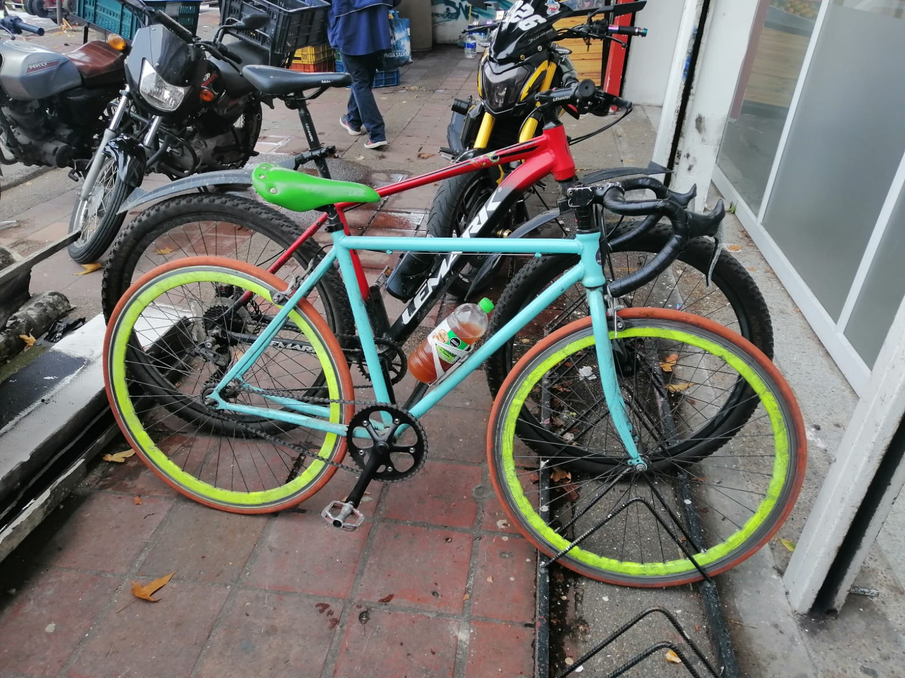
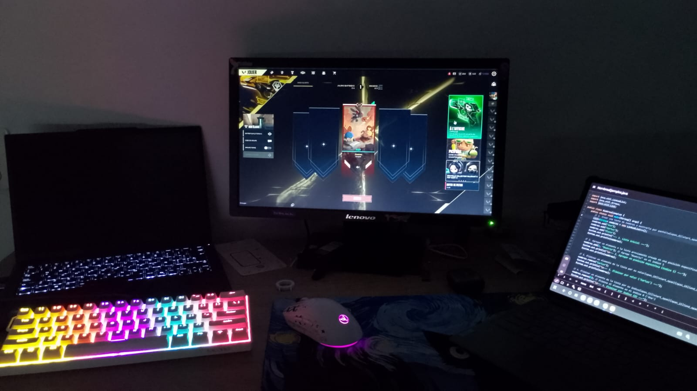

Esfera Pública y Privada

Esfera Pública: [Pedaleando la ciudad en colectivo]
En esta imagen se ven varias bicicletas apiladas, la mía y las de mis amigos, en medio de la ciudad. La bicicleta es un puente directo hacia la esfera pública: cuando salimos a rodar, abandonamos el espacio privado para integrarnos a las dinámicas urbanas. Las calles, los parques y las ciclorrutas son escenarios donde interactuamos con normas de tránsito, infraestructura compartida y otros ciudadanos. Esta foto representa cómo el espacio público es un lugar de encuentro y de socialización; un entorno donde ejercemos nuestro derecho a la movilidad y a la ciudad, compartiendo el mismo aire y las mismas rutas con miles de desconocidos bajo las reglas de la convivencia ciudadana.

Esfera Privada: [Mi refugio digital y académico]
Esta fotografía muestra mi escritorio en la residencia estudiantil, mi espacio más íntimo y personal. Es aquí donde mi vida como estudiante de Ciencia de Datos cobra forma. Frente a mi computador, ya sea estructurando código, resolviendo demostraciones matemáticas o dedicando tiempo a mis aficiones como el modding de videojuegos, construyo mi mundo interior. Este entorno representa la esfera privada porque es un espacio sobre el cual tengo control total; está reservado para mi descanso, mi familia, mi concentración y mis intereses personales, lejos de la mirada y las demandas de la sociedad.
Reflexión: Una dualidad complementaria
primera vista, el silencio y la concentración que exigen mi escritorio y mi computador parecen un mundo totalmente opuesto a la energía y la exposición de recorrer la ciudad en bicicleta con mis amigos. Sin embargo, en la vida diaria son esferas profundamente complementarias. La esfera privada me brinda el refugio necesario para estudiar, recargar energías, programar y cultivar mis intereses personales a mi propio ritmo. Pero esa energía debe salir al exterior: las bicicletas representan esa transición hacia lo público. La actividad física, la socialización y el contacto directo con la ciudad oxigenan mi mente para luego volver a lo académico. Sin el refugio de lo privado, la exposición constante a la ciudad sería agotadora; y sin la interacción en las calles con mis amigos, la vida privada se volvería encierro. Ambas dinámicas me construyen como individuo y como ciudadano activo.